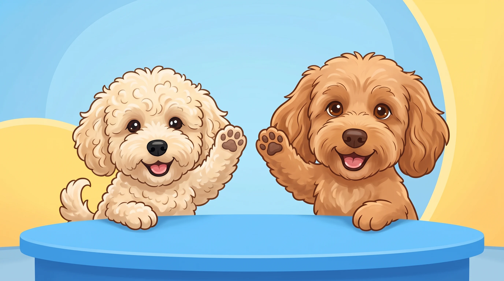
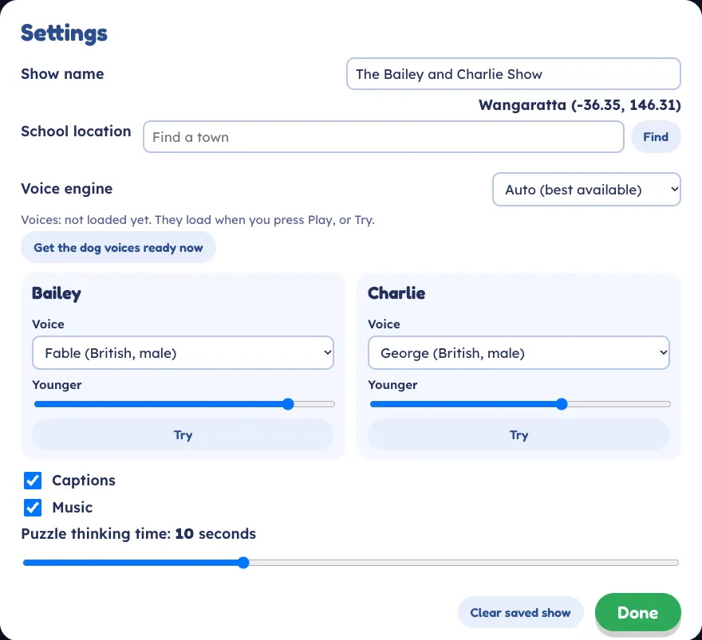
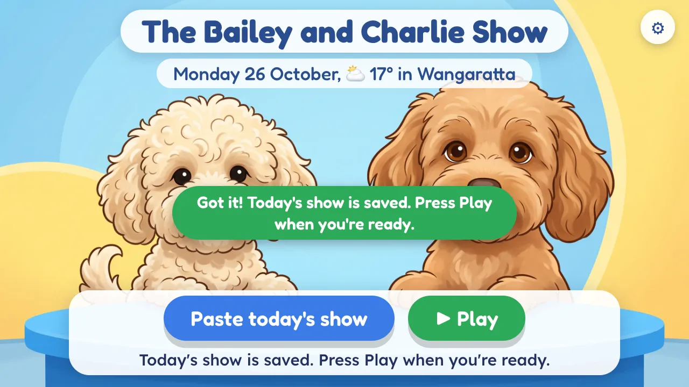
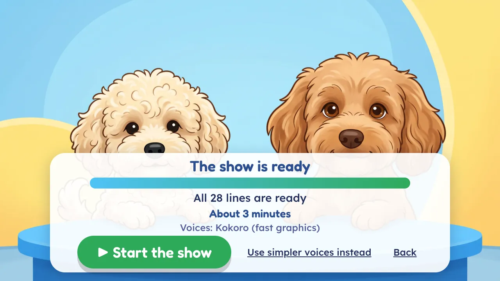
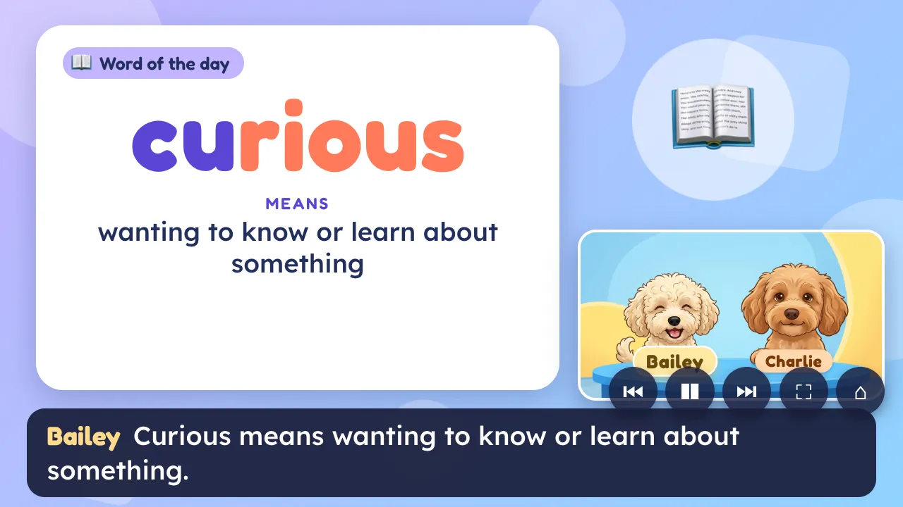
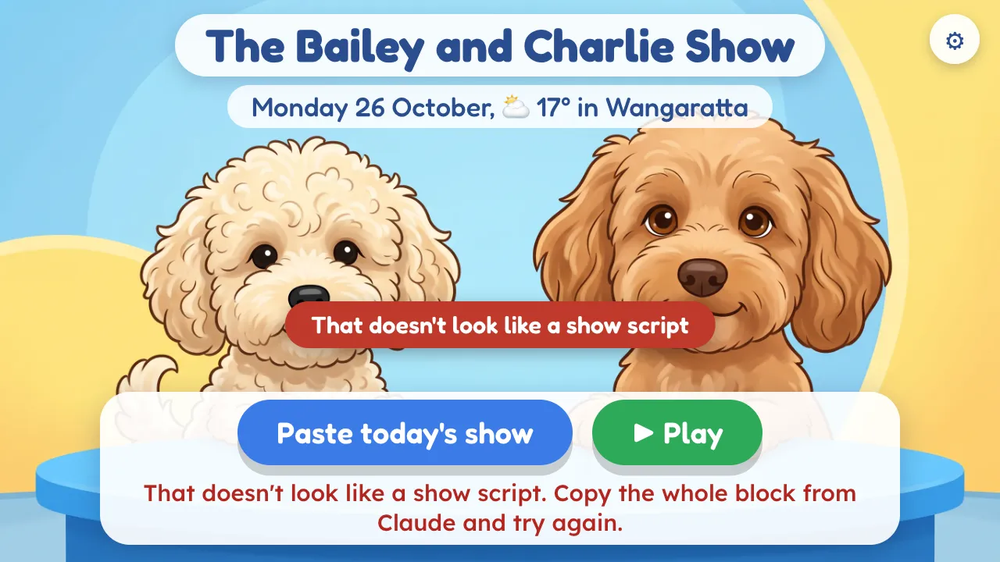

Your Bailey and Charlie guide
Every school morning, Claude writes a short show and Bailey and Charlie present it to your class. You copy it, paste it into the show page and press Play. It runs for three to four minutes.
Use Chrome or Edge on your school laptop.
Once, before your first class show Allow about 20 minutes, on school wifi, a day or two before.
Bookmark the show and this guide
Open the show link above and press Ctrl + D (on a Mac, Cmd + D), then Done. Do the same for this guide.
Put the instructions in your Claude Project
Rose made the Project Bailey and Charlie. Open the instructions page, press Copy the instructions, then in claude.ai press Projects, open Bailey and Charlie and open its instructions. Paste over everything there and press Save. Do this again when Rose says they are updated. Your timetable goes in your Monday chat instead (see "Every morning").
Open the show and check Settings
On the school laptop, open the show and press the cog at the top right.
- School location should say Wangaratta. The dogs use it for the weather. If not, type your town and press Find.
- Under Bailey and Charlie, press Try and listen to each dog.
- Press Done. Leave the rest as it is.

The Settings screen. The first time, the dogs' voices download
On a computer with fast graphics, the first Try or Play shows Downloading the dog voices with a percentage (about 310 MB, first time only). It can take a few minutes, so leave the page open. After that, the voices stay on that laptop and a show is ready in about half a minute.
Other computers have nothing to download. They use their own voices (in Edge, the Australian ones sound best). The line under Voice engine in Settings says which you have.
Use the same laptop and browser each day, and not a private window.
Test it through AirParrot to the TV, with sound
Connect AirParrot to the classroom TV. On the show's home screen, press Play with nothing pasted. The dogs make a surprise show, so you do not need Claude for this test. Press F for full screen. Check that the picture is on the TV and that you can hear Bailey and Charlie from the TV speakers. If there is no sound, see "If something goes wrong".
Every morning Four steps. Start a few minutes early, for example while you mark the roll.
-
Ask Claude
Monday: open your Bailey and Charlie Project, start a new chat and type your request with the week's timetable (all five days, like the first picture). Tuesday to Friday: go back to the same chat and type your request. Put what is on today after Today:, and tell Claude any timetable changes in that chat. First names only, and nothing about health, behaviour or families.
Monday, in a new chat. You type:
Show for today. This week's timetable: Monday: 9:00 Literacy block; ... Tuesday: ... Today: Mia's birthdayTuesday to Friday, same chat. You type:
Show for today. Today: spelling test, wet play -
Copy
Claude replies with the whole show inside a box. Press the Copy button at the top of the box. Do not select the words yourself.
In Claude. The reply is a box:
-
Paste
Open the show from your bookmark. Press the blue Paste today's show button, or press Ctrl + V. If Chrome asks to see what you copied, press Allow.
You will see Got it! Today's show is saved. The dogs start getting their voices ready while they wait.

The home screen after pasting. -
Play
Press the green ▶ Play button. If the dogs' voices are being made, you will see the progress. When it says The show is ready, press ▶ Start the show. With the laptop's own voices, the show starts by itself.
Press F for full screen, then sit back for three to four minutes. The dogs look up the weather for your town themselves, so do not ask Claude for it.

Press Start the show. 
The show playing.
What to type to Claude Start with "Show for today." Put the rest after "Today:". Use one chat for the whole week.
| You type | What you get |
|---|---|
| Show for today. Show for today. Today: Mia's birthday, spelling test, wet play | The first is a full show with no class news. The second adds class news, with confetti for the birthday. Wet play means indoor play at recess and lunch. |
| Show for today. This week's timetable: Monday: 9:00 Literacy block; 10:40 Recess; 11:10 Maths; 12:30 Lunch; 1:30 Art with Mrs Chen (specialist). Tuesday: ... Today: Mia's birthday | Monday only. Start a new chat and send this, with all five days written out (Monday to Friday, each as time, then name, with a semicolon between). Put (specialist) after a specialist class. Claude uses the timetable all week, in that chat. |
| Show for tomorrow. Show for Monday. Show for 3 November. | A show for that day, with that day's timetable from your Monday message. On a Saturday or Sunday, Claude makes Monday's show. |
| Today: swap art and PE. Assembly at 2:15. From now on, art is on Thursday. | Tell Claude changes in the same chat. After "Today:" it is for that day only. After "From now on" it stays for the rest of the week. Give a time for anything new. On an excursion day, the timetable is left out unless you give times. |
| Show for today. Today: 9:00 Literacy block; 10:40 Recess; 1:30 Indonesian (specialist). Library books due back. | A timetable after "Today:" works for that one day. Started a new chat midweek? Paste the week's timetable into it again, or the show leaves the timetable out. |
| Today: Siobhan (Shiv-awn)'s birthday | Put the sound of a hard name in brackets. The dogs say it properly. |
| Today: word is brilliant, fact about volcanoes, easier puzzle Today: it is Book Week, make it all about books | The word, fact or puzzle you ask for, easier or harder. Or a theme day. For NAIDOC Week, send the Acknowledgement and any words you want used, as Claude will not make up language words. |
| Today: star of the week Ava, for helping others Today: countdown to the holidays on 18 December | Ava gets a big gold star, a cheer and a clap. A countdown is a big flipping number of sleeps, worked out from the date. |
| Today: keep it short Today: no puzzle | A shorter show (about two minutes), or a part left out. Hello and goodbye stay. |
| Make the puzzle about fractions (in the same chat) | Claude sends the whole show again. Copy and paste it again to replace the old one. |
During the show
On the keyboard
- Space
- Pause or play
- →
- Next part
- ←
- Back a part
- F
- Full screen
- C
- Captions on or off
- Esc
- Leave (it asks first)
On the screen
- Move the mouse to show five buttons at the bottom right.
- Switching to another tab, or making the browser small, pauses the show. Press Space when you come back.
- At the end, press Play again or Home. A clicker works too.
If something goes wrong Words in red are messages you may see on the screen.
| What you see | What to do |
|---|---|
| No sound from the TV |
If it says it's captions only today, the words still show. Close the browser, open it again and press Play. |
| The voices are slow, or you see This computer is slow at making the voices. | Press Use simpler voices instead (or Start now with simpler voices). The show uses the laptop's voices today. The dog voices could not load, so we are using simpler voices. needs nothing from you. |
| That doesn't look like a show script  |
Go back to Claude, press its Copy button on the whole box, and paste again. The script is cut off or That is only part of the show: ask Claude |
| Paste does nothing, or a box says Paste the show here | Press Allow if Chrome asks. If the box opens, click inside it, press Ctrl + V, then Done. |
| The dogs' mouths do not move | The show is usually paused, so press Space. It also pauses if you switch to another tab or make the browser small. Still shut? Press F5 to reload the page, then Play. Your pasted show is still saved. |
| No weather: the date line at the top has no temperature | Check the wifi and School location in Settings (type Wangaratta, press Find). The show plays fine without it. |
| The wrong day's show: This is Friday's show | It is an old show (or The dogs say Monday, but the show is dated Tuesday...), or Claude got the day wrong. Ask Claude again, for example Show for today. and paste the new one. A show pasted early for tomorrow is fine. It waits for its day. |
| No time for Claude | Press Play. If it asks Play Friday's show again, or a surprise show? press A surprise show. The dogs use a word, fact, puzzle and tip they already have, and still do the weather. |
| Something else went wrong |
Send Rose a report. In the show, press the cog, then Help Rose fix a problem, then Copy a report for Rose, and paste it into a message to Rose. Or press Save the report as a file and attach the file. To show Rose what Claude said, press Share on that chat in claude.ai and send her the link. |
This browser is too old for the show: update Chrome or Edge. Still stuck? Close the browser, open the show and press Play. A pasted show stays saved.
Keeping it safe
- First names only in what you type, and nothing about health, behaviour or families. It goes to Claude, so take the care you would with any online tool.
- Your scripts stay on your laptop. The show page keeps each one in your browser and never sends it anywhere (only the weather, the town search and the voice download go online). Clear saved show in Settings wipes it.
- Check your school's policy on AI-made material for class use, and on putting children's names into online tools.
- You are still the teacher. Claude can slip up on a fact or a joke. If something does not seem right, press → to skip it.